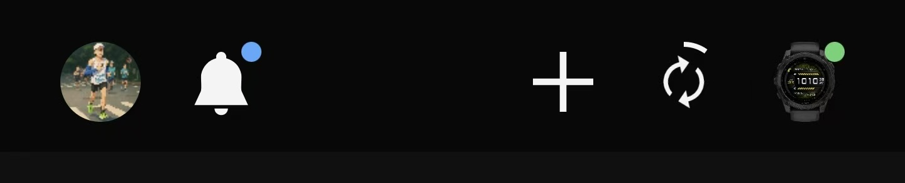
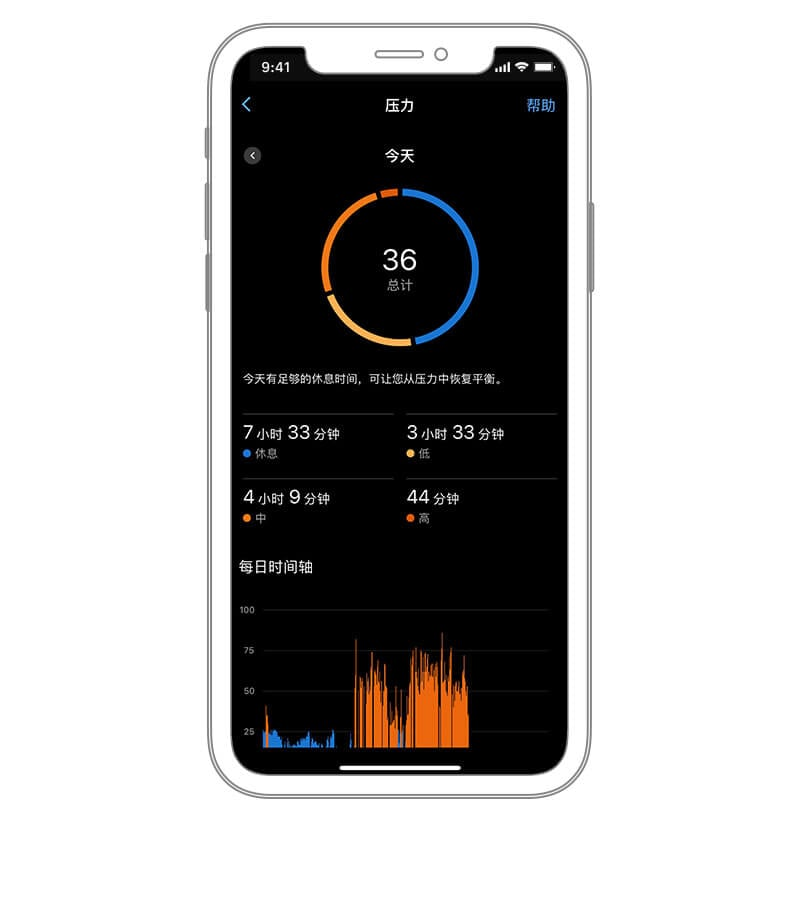

夜跑扭脚那天，我才知道 Garmin Connect 不是个摆设
一个加班后的深夜，六公里处的意外让我重新审视手表同步和安全功能——省电模式忘关、事件检测差点白开，好在这篇文章之后不会再有第二个人踩同样的坑。
周五晚上九点半，公司的灯还亮着三盏。我把电脑一合，抓起挂在椅背上的速干衣就往楼下冲——这是这周最后一次能跑够十公里的机会了，周末要陪家人去扫墓，没时间。
小区门口的风有点凉，但跑起来就暖了。前三公里配速稳稳卡在六分开外，第四公里开始飘了点，第五公里想加速冲一下，结果右脚外侧一软——我整个人斜着甩出去，膝盖蹭着沥青地，右脚踝像被锤子敲了一下。
疼。真疼。坐在马路牙子上，我第一件事不是摸脚，是低头看手腕上那块 Forerunner：屏幕亮着，显示「活动暂停」，右上角的事件检测图标还在闪绿。好，开着的。但等等——它有没有同步上我的手机？
我掏出手机，点开 Garmin Connect。首页右上角，没有绿点。
没有绿点意味着手表和 App 没连上。事件检测虽然在设备端触发了自动报警，但如果蓝牙没通、手机没网络，那条带 LiveTrack 链接和 GPS 位置的求救短信根本发不出去。我刚才摔那一下，白摔了都不知道有没有人能收到信号。
这不是我第一次用这款应用了，但确实是第一次遇到「关键时刻掉链子」。以前都是睡前看一眼数据，步数够不够、睡眠分数高不高，从来没想过它在紧急时刻能起多大作用——前提是它得正常工作。
它是什么
Garmin Connect官网 不是一个简单的运动数据记录 App。佳明做硬件起家，手表卖得贵，但背后这套软件生态才是它真正的护城河——一个账号管好几块表、训练计划自动生成、睡眠分数和身体电量联动、安全追踪全程托管，所有硬件的数据最终都汇聚到这一个地方。国内用的是中文版，海外还有 Connect+ 订阅加 AI 洞察和营养记录。
但说归说，没遇到事之前我对它的认知就是「看数据报表」。直到那晚。
怎么装怎么用
安装没什么难的，应用商店搜一下就行，或者从官方下载拿安装包。注册的时候选中文，佳明账号可以同时管理跑步表、日常手环、骑行码表甚至智能体脂秤——我后来才知道这一点，之前以为每换一块表就得换个账号。
配对手表才是第一个坎。我第一次带新表回家的时候，傻傻地先在手机蓝牙设置里手动点了「配对」，结果 Garmin Connect 里死活搜不到设备，卡了半个小时。后来才搞明白：配对流程必须全程在 App 内完成，App 会弹出六位配对码，手表上同步显示，两边数字对上了才算成。先走系统蓝牙 = 给自己挖坑。
那晚我蹲在马路牙子上想解决同步问题的时候，脑子里跳出来的就是这一幕。先检查了手机蓝牙，开着的；手机网络也没问题，4G 信号满格。那手表呢？我看了一眼手表屏幕——左上角有个小电池图标旁边画了个叶子，省电模式。
对了。上周日我跑了一个长距离，开了省电模式延长续航，跑完忘了关。省电模式会关闭蓝牙和其他无线连接，手表在这个模式下就是一块纯粹的计时器，什么同步、通知、事件检测全都歇菜。
排查清单的第一步其实是确认基础状态：蓝牙两端都开了吗？手机有网吗？手表有没有在省电或隐蔽模式？ 官方说大量蓝牙问题到这一步就解决了，我信。我那晚的问题就是这一条。
关掉省电模式，手表自动搜了一圈蓝牙，手机上 App 的绿点弹出来了，事件检测的那堆待发送数据开始传输。大概过了两分钟，我收到了自己的 LiveTrack 短信——哦，原来它在省电模式下连不上手机，根本没发出去。如果我那天没检查就直接回家了，这条短信永远也不会出现在任何紧急联系人的手机上。

深入点才发现的坑
那晚之后我开始认真研究这个应用，翻了好多 Garmin Connect文档 内容，发现几个之前完全没注意到的细节：
第一，事件检测和紧急联系人的触发有条件。 不是打开开关就完事了。事件检测只在特定户外活动类型下生效，还得设备连着手机、手机有网络。紧急联系人最多能设三位，他们会收到通知，可接受可拒绝——我之前以为加了就是加了，没去确认朋友有没有点「接受」。
第二，换手机数据不会丢。 我之前最担心的就是这个——换手机得重新配对，旧数据怎么办？其实数据全在佳明账号里，新手机登同一个账号、重新配对就行，手表里的历史活动同步一下就回来了。
第三，身体电量低不一定是手表坏了。 我有一段时间身体电量一直 20% 以下，以为是传感器出了问题，翻了相关内容才发现：睡眠欠账 + 压力积累是主因。HRV 状态也会跟着亮红，这是在告诉你该休息了，不是手表要返厂。
第四，多设备共存的数据归属要搞清楚。 我同时带 Forerunner 跑步和 vivoactive 上班，训练状态这种高级指标会以我指定的「主训练设备」为基准。不设的话默认是最后配对的设备，可能不是你想要的那块。

那晚之后的小习惯
现在每次出门跑步前，我会多花十秒钟检查三件事：手表有没有从省电模式切回来、绿点亮不亮、事件检测和 LiveTrack 是不是都开着。紧急联系人那三位，我都发过微信确认过他们点了「接受」。
佳明官方说得对，安全功能是辅助手段，不是急救电话的替代品。但那晚如果我摔得更重一点、意识模糊一点，手机掏不出来，事件检测自动触发的那条短信就是我能发出的唯一信号。它能不能发出去，全取决于我有没有在出发前把那些开关掰对位置。
这些都是我后来翻到的细节——配对的正确姿势、同步排障的顺序、安全功能的触发条件——之前我总觉得这些内容太长不想看，现在才知道，关键时刻能救命的东西，平时多花五分钟搞清楚不吃亏。
资料我在 GitHub、Gitee 和 GitCode 三个仓库都同步了一份，国内访问哪个快用哪个，搜索「手机版」目录下就能找到。愿每一个夜跑的人出门前都花十秒钟检查手表状态。